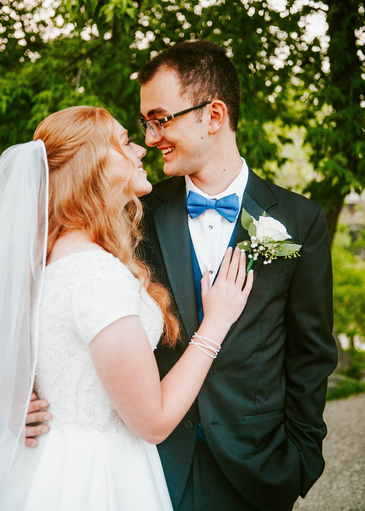

Zach Holcomb
Hello! My name is Zach Holcomb. I am a data science major. I was born in Prescott, AZ, but grew up mostly in Madison, AL. I love playing strategy and puzzle games in my free time as well as reading, hiking, and spending time with my wife.